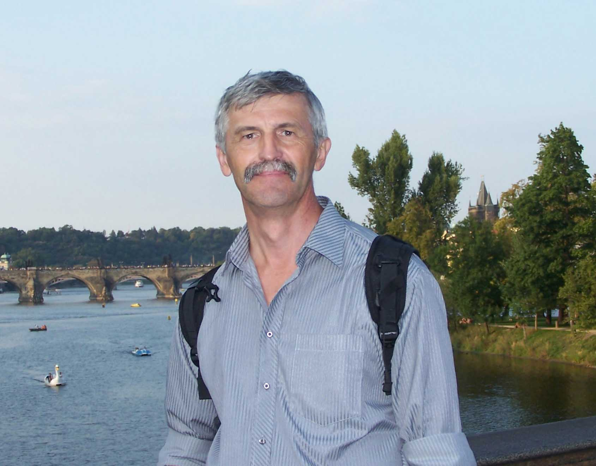

A.M.Obukhov Institute of Atmospheric Physics
Russian Academy of Sciences
Laboratory of Mathematical Ecology
|
RUSSIAN
Current Projects Main Publications |

Candidate
Updated 2025, January |
© 2007-2025 L.L. Golubyatnikov